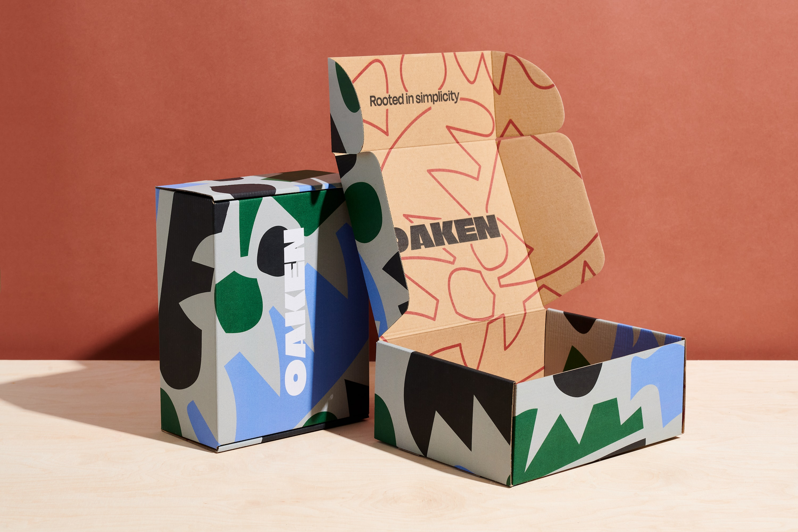
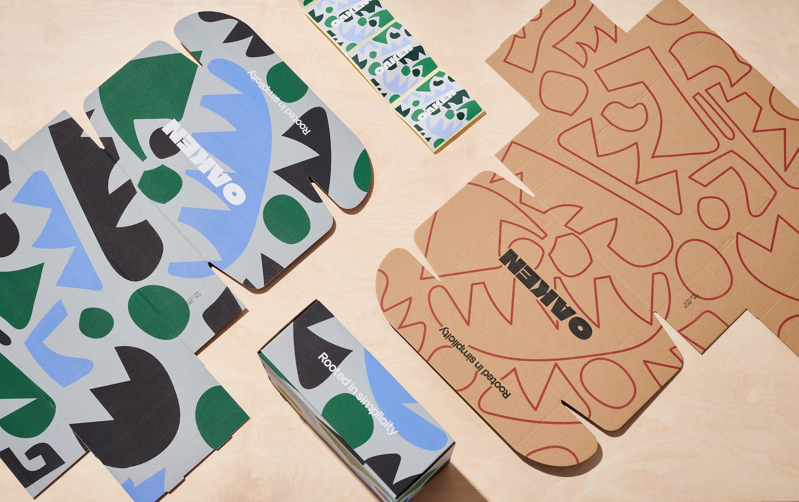
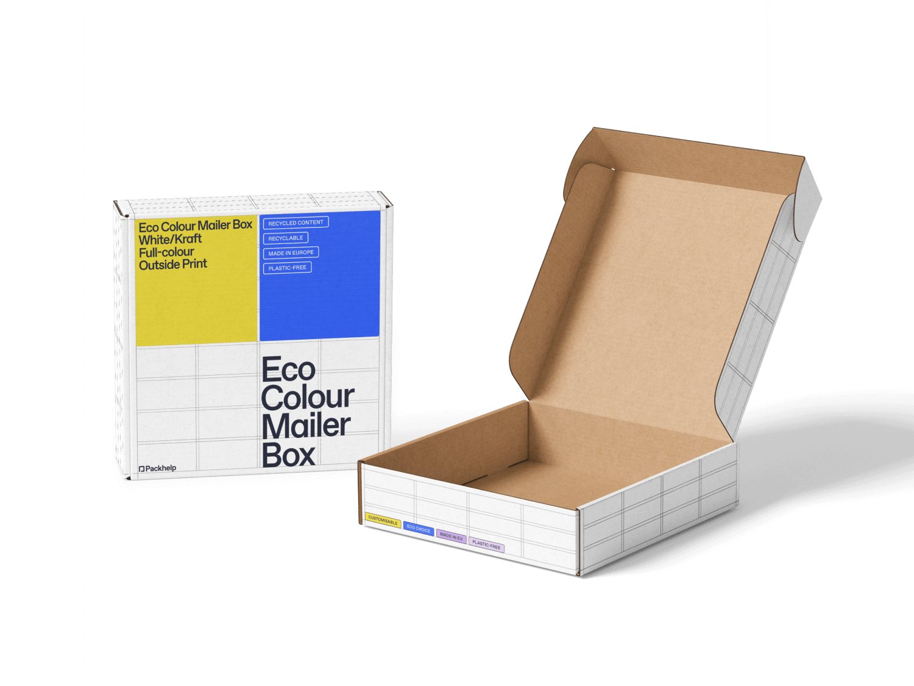
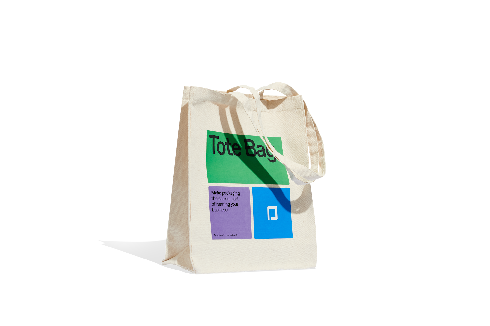
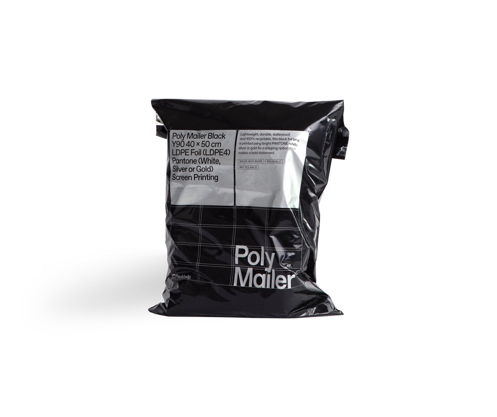
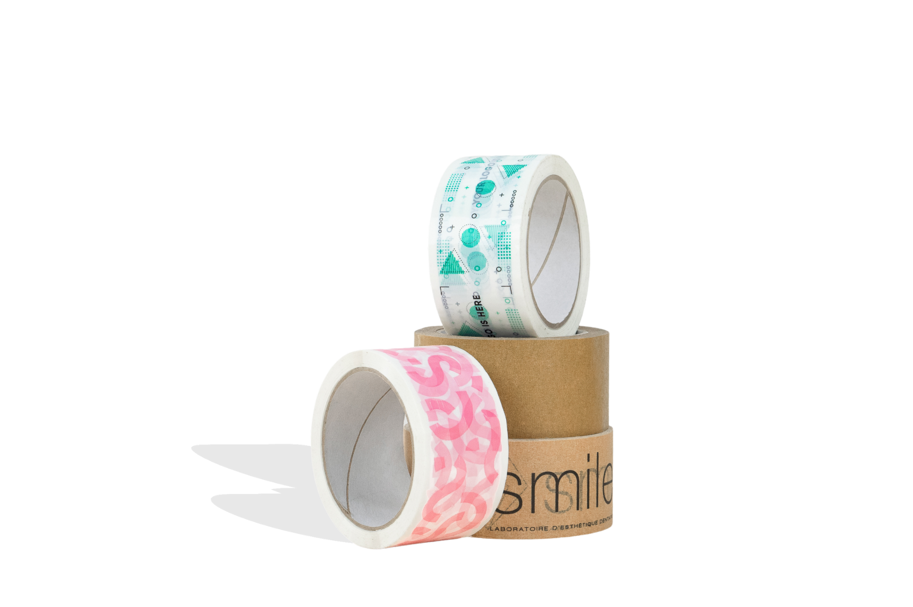
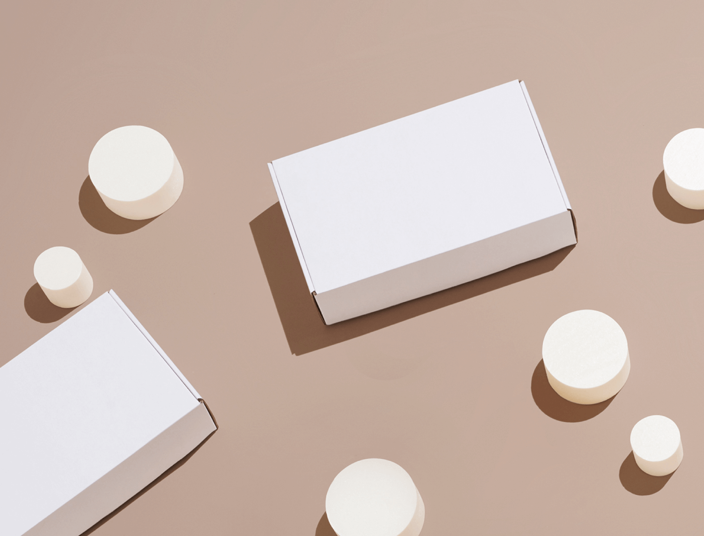
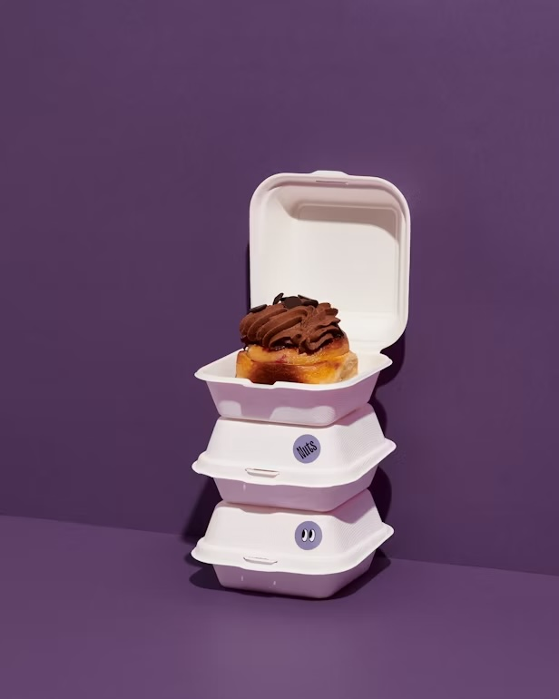

Packaging for hundreds of SKUs across a dozen markets.
One contract and one team instead of twelve suppliers and twelve separate risks.





14
markets on one contract
120+
production sites
98.4%
on the agreed date
21 days
median repeat lead time
Sound familiar?
Check whether we’ve understood what your team is actually dealing with.
A range that grows faster than the team
Every dimension or artwork change becomes its own project, quote and queue.
Data that drifts apart
One price in the sheet, another in the system, a third on the invoice.
Four teams, four criteria
Procurement, marketing, finance and sustainability all have to say yes.
Sound familiar?
Check whether we’ve understood what your team is actually dealing with.
Operations
- A range that grows faster than the team
- Every dimension or artwork change becomes its own project, quote and queue.
- Data that drifts apart
- One price in the sheet, another in the system, a third on the invoice.
- Four teams, four criteria
- Procurement, marketing, finance and sustainability all have to say yes.
Supply chain
- One supplier is one risk
- One line goes down at your sole partner and there is nothing to ship in.
- Lead times without a guarantee
- The delivery date for packaging is a range, not a date. Planning runs on a buffer.
- Deliveries into several countries at once
- Different warehouses, calendars and paperwork in every market you ship to.
ESG & regulation
- Regulation moves faster than the pack
- PPWR, EUDR, CBAM. A design signed off this year may need reworking the next.
- Carbon footprint per SKU
- The report needs data that sits with suppliers, in odd formats, or nowhere.
- Auditing the whole supplier network
- A dozen partners to verify, and the greenwashing risk lands on your brand.
Finance
- Capital frozen in stock
- Minimum runs force a buffer. The money sits in a warehouse instead of working.
- Prepayment with every new supplier
- Diversifying costs you twice — once operationally, once in cash flow.
- Pressure on unit cost
- Finance expects a reduction, marketing a new finish. Same box, both jobs.
Sound familiar?
Check whether we’ve understood what your team is actually dealing with.
- A range that outgrows the team
- Data that drifts apart
- Four teams, four criteria
- One supplier is one risk
- Lead times without a guarantee
- Deliveries into several markets
- Regulation that keeps moving
- Capital frozen in stock
How we solve it
Four answers to the four groups of problems above.
A network of plants, not a single factory
The same SKU can be produced at several sites across Europe. A line going down doesn’t stop your shipments, and you still talk to one team about it.
One contract, one team, one invoice
A dedicated account manager and a technologist run the whole range. Specs, prices and order history live in one place, open to every team that needs them.
Stock held here, released on call-off
We produce the full run, store it, and release it in batches when you need it — to whichever warehouses you name, in as many countries as you ship to.
Compliance paperwork as standard
Every order comes with the reporting data attached: material composition, carbon footprint, certificates and declarations of conformity.
How we solve it
Four answers to the four groups of problems above.
-
A network of plants, not a single factory
The same SKU can be produced at several sites across Europe. A line going down doesn’t stop your shipments, and you still talk to one team about it.
-
One contract, one team, one invoice
A dedicated account manager and a technologist run the whole range. Specs, prices and order history live in one place, open to every team that needs them.
-
Stock held here, released on call-off
We produce the full run, store it, and release it in batches when you need it — to whichever warehouses you name, in as many countries as you ship to.
-
Compliance paperwork as standard
Every order comes with the reporting data attached: material composition, carbon footprint, certificates and declarations of conformity.
How we solve it
The same SKU runs at several sites across Europe. A line going down doesn’t stop your shipments, and you still talk to one team about it.
Built to scale
The constructions we roll out most often at volume. Pick a starting point — we’ll narrow the rest down on the call.

Corrugated shipping carton
- Minimum run10,000 units
- Lead time12–16 days
- Material3-ply corrugated
- PrintFlexo, 1–4 colours
- CertifiedFSC, PPWR

Mailer box
- Minimum run5,000 units
- Lead time12–16 days
- Material3-ply E-flute
- PrintFull colour, outside
- CertifiedFSC, PPWR

Tote bag
- Minimum run2,500 units
- Lead time20–28 days
- Material280 gsm organic cotton
- PrintScreen print, 1–6 colours
- CertifiedGOTS, OEKO-TEX

Poly mailer
- Minimum run25,000 units
- Lead time10–14 days
- MaterialRecycled LDPE foil
- PrintScreen print, Pantone
- CertifiedGRS, PPWR

Inserts and void fill
- Minimum run10,000 units
- Lead time12–16 days
- MaterialMoulded fibre
- PrintUnprinted
- CertifiedFSC, PPWR

Branded labels and tape
- Minimum run50,000 units
- Lead time8–12 days
- MaterialSelf-adhesive paper
- PrintDigital, full colour
- CertifiedFSC
This is the shortlist we reach for most often, not the full catalogue. For a repeating range we design the construction around your product and your packing line.
From first call to standing call-offs. Usually eight to twelve weeks, depending on how much of the range moves at once.
Range review
A conversation about SKUs, volumes, markets and what hurts most today. We come out of it knowing which lines actually move and which ones are quietly costing you.
Quote and samples
A quote for the whole range, plus physical samples for marketing to sign off. One price list, not a separate negotiation per SKU.
Pilot
One SKU, one market, the full cycle. You test us on a real order — production, quality, delivery date — without moving the whole volume.
Rollout
We move the remaining lines and markets on an agreed schedule, so nothing goes out of stock while the switch happens.
Stock and call-offs
Standing stock held here, released on demand, with a quarterly cost review. You order against it instead of forecasting a year ahead.
We’ve done this before
Head of Procurement
Cosmetics brand, 140 SKUs across 8 markets
“We used to put out a fire in a different country every month. Now I have one delivery calendar and one person to call.”
Sustainability Manager
FMCG producer, preparing for PPWR
“We got the whole reporting pack in one file. Before that we spent a quarter collecting it from seven suppliers.”
Operations Director
Electronics brand, nine markets served from one stock
“We stopped forecasting a year ahead. The stock sits with Packhelp and we call it off when the line needs it.”
Documentation comes as standard
What lands with every order, without a surcharge and without having to ask.
Carbon footprint per SKU
Calculated to a GHG Protocol–aligned methodology, ready to drop into your report.
Certificates of origin
FSC and PEFC across the whole chain, each one traceable back to the mill.

Declarations of conformity
PPWR, EUDR and the local rules that apply in each of your delivery markets.
Material and recycling data
Grammage, material codes and recycling marks per SKU, in the format your packaging filings ask for.

Food-contact documentation
Migration test reports and food-contact declarations for every material that touches a product.
Audited production network
Every plant in the network passes a quality and social audit before it runs your work.
Answers before you ask
The five questions procurement teams open with. Anything else, the form covers.
It depends on the construction — usually 5,000 units for product boxes and 10,000 for shipping cartons. Below those thresholds our online configurator is both faster and cheaper for you.
The same SKU is set up to run at more than one site. For ranges above 50 SKUs, a backup plant per item is the standard, not an extra.
Contract customers start at 30 days; 45 or 60 are negotiable once the relationship is established. Repeat orders don’t require prepayment.
We can, but we’d rather not. We start with a pilot on one SKU in one market and roll the rest out in stages, so continuity of supply is never the thing being tested.
Every order ships with material composition, carbon footprint per SKU, certificates of origin and declarations of conformity — in one file, ready to fold into your report.
Tell us about your project
A specialist comes back with a proposal within one working day — a real person, not an auto-quote.
Scope
Contact
At this volume you’ll move faster without us
Up to 5,000 units you can configure and price the order yourself in a few minutes — no waiting for a call back, no sales conversation.
Open the configuratorEnquiry received
We’ll be in touch within one working day.
Twelve suppliers.
Or one partner.
Tell us what your range looks like today, and we’ll come back with what it would cost to run it from one contract.